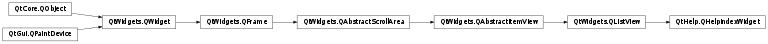

QHelpIndexWidget¶
Detailed Description¶
ThePySide2.QtHelp.QHelpIndexWidgetclass provides a list view displaying thePySide2.QtHelp.QHelpIndexModel.
-
PySide2.QtHelp.QHelpIndexWidget.activateCurrentItem()¶ Activates the current item which will result eventually in the emitting of a
PySide2.QtHelp.QHelpIndexWidget.linkActivated()orPySide2.QtHelp.QHelpIndexWidget.linksActivated()signal.
-
PySide2.QtHelp.QHelpIndexWidget.filterIndices(filter[, wildcard=""])¶ Parameters: - filter – unicode
- wildcard – unicode
Filters the indices according to
filterorwildcard. The item with the best match is set as current item.See also
-
PySide2.QtHelp.QHelpIndexWidget.linkActivated(link, keyword)¶ Parameters: - link –
PySide2.QtCore.QUrl - keyword – unicode
- link –
-
PySide2.QtHelp.QHelpIndexWidget.linksActivated(links, keyword)¶ Parameters: - links –
- keyword – unicode
© 2018 The Qt Company Ltd. Documentation contributions included herein are the copyrights of their respective owners. The documentation provided herein is licensed under the terms of the GNU Free Documentation License version 1.3 as published by the Free Software Foundation. Qt and respective logos are trademarks of The Qt Company Ltd. in Finland and/or other countries worldwide. All other trademarks are property of their respective owners.